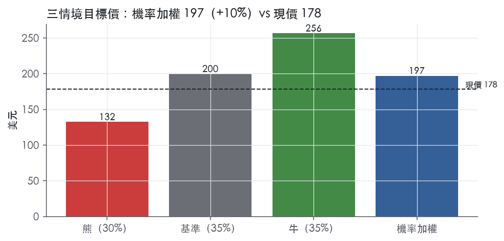
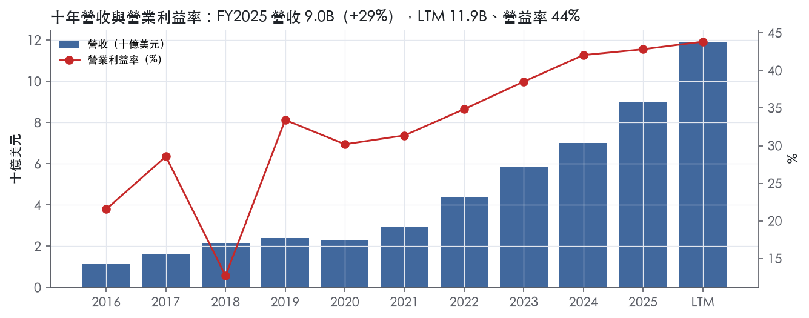
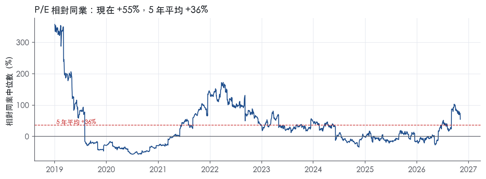
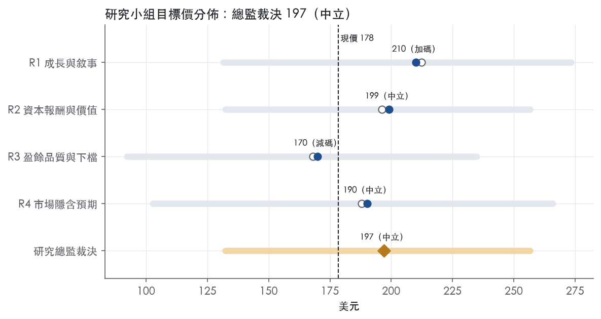
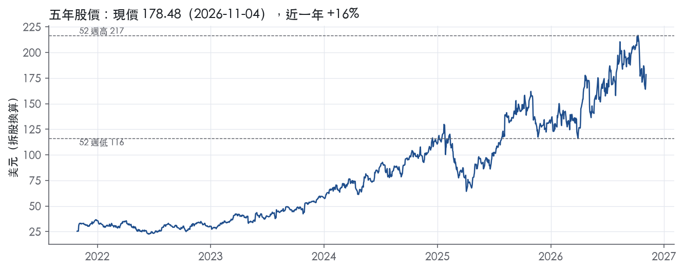

評等總表 › 資訊科技 › ANET
盈餘上修抵倍數降檔，中性｜評等 中立｜目標價 197
| 報告日 | 評等 | 目標價 | 當時股價 | 超額報酬 |
|---|---|---|---|---|
| 2026-11-04 | 中立 | 197 | 178 | +0.4% |
| 2026-10-30 | 中立 | 180 | 169 | -1.6% |
| 快評 | 動作 | 結論 |
|---|---|---|
| 2026-11-03 | 維持 | 營收高於我們預測13.5%，維持中立 |
| 評等 | 中立 |
| 12 個月目標價 | 197 美元 |
| 現價 | 178.48 美元（2026-11-04） |
| 預期報酬 | 股價 +10.4%＋股息 0.0%＝總報酬 +10.4%；同業籃門檻 10.0%，超額 +0.4% |
| 估值方法 | P/E 40.0x，套在未來四季的EPS |
| 三情境 | 熊 132／基準 200／牛 256 |
| 研究流程 | 四位研究員兩輪辯論＋研究總監裁決 |
| 資料來源 | SEC EDGAR XBRL、Tiingo、FRED（全免費） |
盈餘上修抵倍數降檔，中性（研究總監裁決，四位研究員兩輪辯論後）
評等 中立｜12 個月目標價 197 美元（總監三情境機率加權 199 與研究員中位數 195 各半）｜現價 178.48（2026-11-04）
預期報酬：股價 +10.4%＋股息 0.0%＝總報酬 +10.4%。同業籃門檻 10.0%，超額 +0.4%。
估值方法：P/E 40.0x，套在未來四季的EPS。三情境：熊 132（30%）／基準 200（35%）／牛 256（35%）。
什麼會讓研究總監改變看法：2027 年 1–2 月兩大客戶 2027 資本支出指引同步上修、Q1 2027 指引高於 Q4 實際且 FY2026 遞延收入全年增量超過前九月 1,467.1M，則 y2 上調至 22%、倍數回到 44x 轉多；Q1 2027 指引低於 Q4 實際或遞延收入連兩季減少，則啟動熊情境、倍數降至 5 年 P10 33.4x。
| 過去四季（實際，FY2026Q3） | 未來四季 | 第 5–8 季 | 第 9–12 季 | |
|---|---|---|---|---|
| 營收（B） | 11.9B | 16.6B | 19.6B | 20.7B |
| 營收成長 | 40.7% | 40.0% | 17.6% | 6.0% |
| 營業利益率 | 43.8% | 44.5% | 44.0% | 43.0% |
| EPS（美元） | 3.72 | 4.99 | 5.80 | 6.00 |
| EPS 成長 | 41.1% | 34.2% | 16.1% | 3.5% |
| 每股股息（美元） | — | 0.00 | 0.00 | 0.00 |
| P/E（現價） | 48.0x | 35.8x | 30.8x | 29.8x |
| 股息殖利率（現價） | — | — | — | — |
過去四季為申報數字；預測為研究總監的假設、程式計算。倍數與殖利率都用現價計算，用來看現價對應各期獲利的高低。
| 項目 | 上次（2026-11-01） | 這次（2026-11-05） | 變動 |
|---|---|---|---|
| 評等 | 中立 | 中立 | ＝ |
| 機率加權目標價（美元） | 180 | 197 | +9.5% |
| 超額報酬 | -1.6% | 0.4% | +2.1 pp |
| 目標倍數 | 44x | 40x | — |
| 未來四季營收成長 | 35.0% | 40.0% | +5.0 pp |
| 未來四季營益率 | 44.0% | 44.5% | +0.5 pp |
| 未來四季 EPS（美元） | 4.22 | 4.99 | +18.3% |
| 熊／基準／牛機率 | 26／39／35 | 30／35／35 | — |
程式計算；「未來四季」各自從當次報告的資料起點算。研究總監逐點說明見第八章「與上次報告比較」。
| 情境 | 機率（歷史） | 故事 | 未來四季營收成長 | 第 5–8 季營益率 | 倍數 | 目標價 | 股價漲跌 |
|---|---|---|---|---|---|---|---|
| 熊 | 30%（30%） | 對應風險表第 1、3 條：兩大客戶之一 2027 上半年消化 AI 建置、延後或取消大額採購，Q5–Q8 負成長（先例 FY2020 −3.9%），3.2B 存貨減損壓 y2 營益率至 38%，倍數落到 5 年 P10 與 10 年 P10 之間 30x | 28.0% | 38.0% | 30.0x | 132 | -25.9% |
| 基準 | 35%（35%） | Q4 達 3.9–4.0B 指引，2027 季營收溫和續增，Q5–Q8 降到基準 17.6%，trailing P/E 自 48.0x 回落到 5 年 P50 下方 40x，盈餘成長吸收倍數 | 40.0% | 44.0% | 40.0x | 200 | 11.9% |
| 牛 | 35%（35%） | 兩大客戶 2027 資本支出指引同步上修、Q1 2027 指引高於 Q4 實際、ESUN 機架級產品下半年貢獻營收，一年後前瞻成長仍在二成五，trailing 停在現行 48x 不降檔 | 45.0% | 46.0% | 48.0x | 256 | 43.7% |
目標價由程式依研究總監的驅動與倍數計算；機率由研究總監給定。括號內是歷史頻率：把這檔股票過去十年 12 個月報酬的波動形狀，置中在基準情境，結果落在各情境附近的比例。

四位研究員用不同方法各自估值，回應研究總監的質疑後交出第二輪，最後由總監逐點裁決。各研究員的主張見第七章，裁決理由見第八章，完整論證見《研究底稿》。
| 立場（一輪→二輪） | 加權目標價（一輪→二輪） | 評等（一輪→二輪） | 第二輪倍數 | 熊～牛目標價 | |
|---|---|---|---|---|---|
| R1 成長與敘事 | 看多→看多 | 212→210 | 加碼→加碼 | 43.0x | 131～273 |
| R2 資本報酬與價值 | 中性→中性 | 196→199 | 中立→中立 | 40.0x | 132～256 |
| R3 盈餘品質與下檔 | 中性→看空 | 168→170 | 賣出→減碼 | 32.0x | 92～235 |
| R4 市場隱含預期 | 看多→中性 | 188→190 | 中立→中立 | 32.0x | 103～266 |
| 研究總監裁決 | 中性 | 197 | 中立 | 40.0x | 132～256 |
目標價由程式依各自的驅動與倍數計算；評等＝機率加權總報酬 − 同業籃門檻。
Arista Networks 是一家以軟體定義操作系統 EOS 為核心，提供「client-to-cloud」網路解決方案的公司，將網路定位為串接 AI Centers、Data Centers、Campus Centers、WAN Centers 四大領域的統一服務¹。客戶分為三大類：Cloud and AI Titans、AI and Specialty Providers、以及 Enterprise¹。本質上這是一家靠高速乙太網交換機硬體起家、現在往AI網路基礎設施與網路軟體服務延伸的公司。
Arista 的產品線分三大類：Core（AI、雲端與資料中心網路）、Cognitive Adjacencies（校園網路與路由）、Cognitive Networks（軟體與服務）¹。10-K 未揭露各產品線具體營收佔比。財報將營收拆為 Product 與 Service 兩項，FY2026Q3 Product 收入 3,190.0M 美元、Service 收入 467.6M 美元，合計總營收 3,657.6M 美元²；前九月累計 Product 8,106.5M 美元、Service 1,295.8M 美元²。AI 網路方面，Etherlink 系列產品超過二十款，涵蓋 Scale Out 與 Scale Across 應用，並正朝 Scale Up（透過 Ethernet for Scale Up Networks,ESUN 標準）擴張¹。校園與路由產品包含 7280R4 Universal Leaf、7500R3/7800R4 Universal Spine，以及新併入的 VeloCloud SD-WAN 產品組合¹。軟體服務面則以 CloudVision（AI Ops 與管理平台）、NetDL（網路數據湖）、Arista AVA（agentic AI 決策支援系統）為核心，並有 Zero Trust 安全與 A-Care 客戶支援服務¹。從資料包角度看，FY2025 全年營收 9.01B、毛利率 64.1%、營益率 42.8%，顯示公司整體仍維持軟體化高毛利結構。
客戶高度集中於少數大型雲端廠商：FY2025 兩大客戶合計占總營收 26% 與 16%¹。銷售採直銷加通路夥伴（經銷商、加值轉售商、系統整合商、OEM）並行模式，透過 Arista Partner Program 強化通路覆蓋¹。製造委外予 Jabil、Sanmina、Foxconn Hon Hai，產地集中於馬來西亞、越南、墨西哥等地，再經美國、荷蘭、新加坡的四個直營物流中心配送¹。晶片供應上高度依賴 Broadcom 作為主要商用矽晶片供應商，且無書面保證供應協議¹。10-K 未揭露按地理區域的營收細分。這種「大客戶集中＋單一晶片供應商綁定」的結構是 Arista 最明顯的尾部風險來源。
FY2025Q4（2025-12-31）營收 2.49B，年增 28.9%，營益率 41.5%（is/cf/bs 季表 FY2025Q4）。FY2026Q1 營收 2.71B，年增 35.1%，營益率回升至 42.7%（季表 FY2026Q1）。FY2026Q2 公司首次單季營收突破 3B 美元，達到 3.036B，季增 12.1%、年增 37.7%，GAAP 營益率 45.4%、Non-GAAP 營益率 49.9%，GAAP 稀釋 EPS 0.95 美元³；公司對 Q3 2026 的指引為「Revenue of approximately $3.3 billion; Non-GAAP operating margin of 48-49%; Non-GAAP diluted net income per share between $1.06 and $1.08」³。FY2026Q3 實際營收 3,657.6M 美元，超越指引的 3.3B，年增 58.5%，是「the highest year-over-year revenue growth since our IPO」²；GAAP 營益率 44.9%、Non-GAAP 營益率 49.1%，GAAP 稀釋 EPS 1.22 美元、Non-GAAP 稀釋 EPS 1.20 美元²。公司對 Q4 2026 指引為「Revenue of $3.9 - $4.0 billion; Non-GAAP operating margin of 48-49%; Non-GAAP diluted net income per share of $1.26 - $1.30」²。四季趨勢清楚：營收成長率從 Q4 的 28.9% 一路加速到 Q3 的 58.5%，顯示 AI 網路需求在過去三個季度明顯提速，且利潤率同步擴張而非被稀釋。
公司將自己定位為「Centers of Data」戰略的執行者，核心敘事是網路已從傳統 IT 基礎設施演變為「central nervous system」，服務於 LLM、agentic AI、physical AI 時代的資料流動需求¹。具體成長引擎鎖定 AI Scale Out／Scale Across 市場，公司認為 Ethernet 正在取代 InfiniBand 等專有互連技術，是其核心搶份額機會，並認為 Scale Up 是「未來增量機會」¹。CEO Jayshree Ullal 在 Q3 法說中稱本季是「IPO 以來最高的年增率」並強調「增加了我們在生成式與 agentic AI 時代的相關性」²。CFO Chantelle Breithaupt 則稱 Q3 為公司「true trifecta」，營收、淨利、EPS 同步創歷史新高²。公司在 Q2 與 Q3 法說中反覆強調與 AMD、Arm、Broadcom、d-Matrix、Meta、Microsoft、Qualcomm 等生態系夥伴共同推動開放標準架構（ESUN、SRv6）作為差異化策略²。整體而言，Arista 目前的成長故事高度集中在「AI 資料中心網路份額擴張＋開放標準取代專有互連」單一主軸，三個季度指引與實際數字皆保持超預期且逐季加速，顯示需求端動能尚未見到放緩訊號。但兩大客戶合計占比 42% 的集中度，加上對 Broadcom 單一晶片供應商的依賴，意味著公司成長的脆弱性集中在少數幾個決策者手中。目前 trailing P/E 48.0x、EV/Sales 18.0x 皆高於五年中位數，市場顯然已部分反映這個加速敘事（px 相關 fact id 參見快照表）。

Arista 的護城河評為窄，趨勢穩定。我們有把握未來 5 年以上 ROIC 仍高於資本成本，但沒有把握撐過 10 年。
護城河的核心是 EOS 單一作業系統帶來的轉換成本，輔以品牌與專利。這道護城河上不了「寬」，有兩個原因：
過去三季營收加速、利潤率擴張，但客戶集中與晶片依賴兩個結構性弱點沒有改變，因此趨勢判為穩定而非變寬。
轉換成本是主要來源。公司描述其平台「relying on a single operating system (EOS), a single data lake (NetDL), and a single management solution (CloudVision)」¹。CloudVision 管理範圍橫跨「data centers, campus wired and wireless networks, routing interconnects, and multi-cloud networks」¹。客戶一旦把自動化腳本、遙測與維運流程建在 EOS 和 CloudVision 上，換供應商就得重寫維運體系並重新訓練人員，這才是真正的轉換成本，硬體本身不是。研發面同樣綁定客戶：「Our success relies on our foundation of deep engineering partnerships with our customers」¹。共同開發把 Arista 嵌進客戶的架構決策流程，加深了綁定。
這個來源有一個反向訊號：Arista 自己主打開放標準，宣稱產品「avoids what is often expensive vendor lock-in」¹。開放標準降低了硬體層的轉換成本，鎖定效果只剩軟體與維運層，這是我們不給「寬」的原因之一。
無形資產是次要來源。公司表示「Arista, EOS, and CloudVision are among our core trademarks」¹。支援體系「has earned us an industry-leading Net Promoter Score」¹。在故障成本極高的資料中心網路，可靠性口碑是採購決策的實質因素，品牌有經濟價值。專利的保護力有限，公司自承專利「may be contested, circumvented, found unenforceable or invalidated」¹。
成本優勢、網路效應、效率規模三類找不到證據，不列入。
量化底稿支持「有護城河」，而且強度超過窄護城河的門檻。
ROIC 遠高於資本成本。ROIC 有資料的 9 年中，9 年都高於資本成本。十年平均 ROIC 193.1%，最低 95.5%，對照資本成本代理值 10.0%。
毛利率高度穩定。毛利率十年平均 63.5%，標準差僅 1.0%，區間 61.1% 到 64.5%。客戶議價力極強、公司又面臨白牌壓價，毛利率仍能守在這麼窄的區間，是定價權存在最直接的證據。
數字與我們的評級有衝突，這裡照實寫出。第一個衝突是 ROIC 本身：標準差 99.3%、最高 449.5%。這組數字主要反映製造全數委外造成的投入資本極小，屬於商業模式輕資產的結果，不能直接解讀為護城河寬度。第二個衝突是營業利益率：標準差 8.8%、最低 12.7%，波動遠大於毛利率。由於同期毛利率最低也有 61.1%，我們判斷營益率的低點來自費用端單一事件，競爭侵蝕定價的可能性較低。
為何數字像寬，我們仍維持窄。量化底稿只能證明過去十年，無法反映客戶集中度與晶片非獨家的前瞻風險。我們不因歷史數字漂亮而上調評級。
最大威脅是大客戶自研或改用白牌設備。原文的描述有三段：
兩大客戶分別占 FY2025 營收的 26% 與 16%¹。只要其中一家把份額移往白牌或第二供應商，ROIC 不會掉到資本成本以下，但利潤率的穩定性會被打破。
第二個威脅來自晶片。公司「primarily reliant upon our predominant merchant silicon vendor, Broadcom」，而且「nor do we have exclusive rights to such key components」¹。競爭者買得到同一顆晶片，硬體差異化有天花板。
第三個威脅是垂直整合與綑綁銷售。原文指出 IB 與 NVLink「are often sold as part of a vertical solution along with the GPUs from Nvidia」¹，也提到「Hewlett Packard Enterprise has acquired Juniper Networks」¹。綑綁銷售會繞過最佳產品的評選流程，直接削弱 Arista 的軟體差異化。
目標倍數應相對網通設備同業溢價，理由是 ROIC 長期遠高於資本成本、毛利率波動極小，定價權有數字支撐。窄護城河只支持 5 到 10 年的超額報酬期，溢價不宜外推為永續，目標 P/E 以不超過自身 5 年 P90 57.6x為上限，中樞參考 5 年 P50 44.3x。若任一大客戶公開轉向自研或白牌，應立即把溢價收斂至中樞以下。
| 指標 | 最新 | 十年平均 | 標準差 | 最低 | 最高 |
|---|---|---|---|---|---|
| ROIC | 192.0% | 193.1% | 99.3% | 95.5% | 449.5% |
| 毛利率 | 64.1% | 63.5% | 1.0% | 61.1% | 64.5% |
| 營業利益率 | 42.8% | 31.6% | 8.8% | 12.7% | 42.8% |
| FCF 利潤率 | 47.2% | 32.0% | 12.8% | 10.2% | 52.5% |
| ROE | 31.4% | 28.3% | 6.0% | 17.2% | 34.5% |
程式計算。資本成本代理值（10 年債＋5%）：10.0%；ROIC 平均減資本成本：183.2%；ROIC 有資料的 9 年中，高於資本成本 9 年。
Arista 的現金流對盈餘的覆蓋率在 LTM、三年、十年期都維持在 1.0x 以上，應計比率長期為負，顯示盈餘不是靠會計估計堆出來的【判，依量化底稿】。但計分表上出現一條未在本次拿到的 10-K Item 7 原文中找到對應解釋的紅燈——應收帳款成長比營收快 37 個百分點（FY2025）——在沒有原文佐證之前，不能把它歸類為「已解釋的一次性」，所以整體品質只給「中」，而非「高」。SBC 佔營收 4.3–5.1% 的黃燈與回購力度不足的黃燈則屬於可解釋、長期存在的結構性特徵，不影響本次評級往下修。
現金持續跟得上、甚至略超過盈餘，這是 Arista 財務體質最硬的一塊。LTM 營業現金流／淨利為 1.10x，近三年平均 1.17x，十年平均 1.13x，三個時間窗都站在綠燈的 1.00x 門檻之上。自由現金流／淨利 LTM 1.06x、三年 1.15x、十年 1.09x，同樣全部過關，說明資本支出沒有吃掉現金優勢。應計比率 LTM 為 -2.0%、三年 -3.9%、十年 -2.5%，全部是負值，代表淨利長期低於現金流而非靠應計高估。從最新一期現金流量表看，九個月營運現金流被應收帳款（440.9M）、存貨（962.8M）、其他資產（604.2M）三項營運資金消耗，但遞延收入增加 1,467.1M 幾乎完全對沖了這些消耗²，這也呼應了應計比率仍是負值、現金轉換未被侵蝕的結果。
公司非 GAAP 調整的大宗是股權酬勞與併購產生的無形資產攤銷，兩者都是我認為應該視為真實經濟成本、不該簡單加回的項目。Q3 2026 GAAP 營業利益 1,642.4M，加回 SBC 138.1M 與無形資產攤銷 15.3M 後得到非 GAAP 營業利益 1,795.8M²；九個月口徑下 SBC 加回 379.4M、攤銷加回 45.9M²。淨利層面另外剔除了策略性投資的（利得）/損失 Q3 為 (134.5M)、九個月為 (143.3M)，以及股權獎酬相關的稅務利益 Q3 (40.0M)、九個月 (105.3M)²。SBC 是持續性、每季都發生的現金外成本，加回之後會系統性美化獲利能力，我認為估值不該採信加回後的數字。策略性投資利得/損失屬於非經營性、波動大的項目，排除在核心獲利能力之外是合理的。無形資產攤銷源自收購，屬於歷史並購的會計攤提，排除有一定合理性，但也意味著過去的收購確實付出了現金代價，不能完全無視。
公司是淨現金狀態且完全沒有有息負債，這是本章槓桿分析裡最乾淨的一項。淨負債／EBITDA LTM 為 -2.71x、三年平均 -2.55x、十年平均 -3.31x，全部是負值，代表帳上現金與投資遠超過任何負債，綠燈。總債務在最近八季全部為 0.00B，利息保障倍數因此沒有意義，LTM 與三年顯示「—」，十年平均 116.0x 只反映歷史上極小的利息費用規模，不是一個有實質約束力的指標。資產負債表上現金及約當現金 2,288.1M、有價證券 12,070.9M，合計遠超總負債 8,817.4M²，股東權益從 2025 年底 12,370.5M 增加到 2026 年 9 月底 16,446.7M²。資本配置方面，（股利＋回購）／淨利 LTM 僅 13.0%、三年平均 22.0%、十年平均 36.8%，三者都低於 50% 的綠燈門檻，顯示公司把盈餘大量留在帳上而非回饋股東。稀釋股數年變動 LTM +0.2%、三年 +0.3%、十年 +1.0%，屬輕微稀釋而非淨減股，回購力度不足以抵銷股權酬勞發放的股數。公司自己在風險因子裡也明確說明不打算在可預見的未來配發現金股利⁴。
應收帳款成長比營收快 37 個百分點（FY2025）——紅燈，未獲原文解釋，視為真實待觀察的風險：這是本次唯一沒有在拿到的 10-K Item 7 段落裡找到對應敘述的紅旗，無法判斷是客戶集中度提高後付款週期拉長，還是單純季末出貨節奏造成的時點效應，因此不能打折成「假警報」。從最新一期資料看，應收帳款九個月增加 440.9M 且持續消耗現金，但被遞延收入成長 1,467.1M 蓋過，短期內還沒有轉化為現金轉換惡化（量化底稿／8-K 2026-11-03）。在沒有管理層明確說明前，這條紅旗應被視為「真問題但尚未惡化」，需要在下一次財報確認應收帳款周轉是否持續惡化。
淨利率 FY2017→FY2018 跳動 -10 個百分點——可解釋為一次性，但本次原文節錄未涵蓋該年度細節，故降級為「無法完全驗證」：年度表顯示 FY2018 營益率從 28.6% 降到 12.7%、淨利率同步大幅下滑，而拿到的 10-K Item 7 原文節錄只涵蓋 Business 與 Risk Factors 部分，沒有該年度 MD&A 的具體財務討論可供引用，因此我只能依量化底稿判斷這是單一年度的毛利或費用結構性下滑，不是現金流品質問題，因為同一年 CFO／淨利與 FCF／淨利仍維持在 1.5x 以上的健康區間。
淨利率 FY2018→FY2019 跳動 +20 個百分點——同樣是歷史事件，原文未提供細節，判斷為正常的營運槓桿修復：FY2019 營益率回升到 33.4%，屬於前一年基期偏低後的正常修復，且 CFO／淨利、FCF／淨利在這兩年度都未出現應計比率紅燈。
SBC／營收 4.3–5.1%，黃燈——結構性而非一次性，但不是現金外流，是真實的股東稀釋成本：SBC 多年維持在 4–6% 區間、十年平均 5.1%，是公司長期的薪酬政策而非單季異常。公司非 GAAP 獲利能力的拉高主要就來自把 SBC 加回，這部分不該被投資人直接採信為「無成本的獲利」。
稀釋股數年變動與股東回饋比率，黃燈——SBC 稀釋沒有被回購完全抵銷，是資本配置選擇而非盈餘品質問題：（股利＋回購）／淨利十年平均僅 36.8%，顯示公司傾向保留現金而非積極買回股票對沖稀釋，這是管理層的資本配置風格，不影響盈餘的真實性。
估值應以 GAAP 盈餘為基礎，SBC 與策略性投資利得損失都該視為需要打折或剔除的項目，但攤銷可以適度加回。公司淨現金、零有息負債的資產負債表完全不構成槓桿限制，估值倍數不需要因為財務風險而被壓低。唯一需要在估值上預留緩衝的是應收帳款成長與營收脫鉤的風險，若下一季度持續惡化，應該在 FCF 預測中提高營運資金消耗假設，對目前 2.2% 的 FCF 殖利率與 48.0x 的 P/E 做小幅下修。
| 項目 | LTM | 近三年 | 十年 | 燈號 | 規則 |
|---|---|---|---|---|---|
| 營業現金流／淨利 | 1.10x | 1.17x | 1.13x | 綠 | ≥1.00x 綠、<0.80x 紅 |
| 自由現金流／淨利 | 1.06x | 1.15x | 1.09x | 綠 | ≥0.90x 綠、<0.60x 紅 |
| 應計比率（(淨利−CFO)／平均總資產） | -2.0% | -3.9% | -2.5% | 綠 | ≤0.0% 綠、>5.0% 紅 |
| SBC／營收 | 4.3% | 5.0% | 5.1% | 黃 | ≤3.0% 綠、>8.0% 紅 |
| 淨負債／EBITDA | -2.71x | -2.55x | -3.31x | 綠 | ≤1.50x 綠、>3.00x 紅 |
| 利息保障倍數（營業利益／利息） | — | — | 116.0x | — | ≥8.00x 綠、<3.00x 紅 |
| 稀釋股數年變動 | 0.2% | 0.3% | 1.0% | 黃 | ≤0.0% 綠、>3.0% 紅 |
| （股利＋回購）／淨利 | 13.0% | 22.0% | 36.8% | 黃 | ≥50.0% 綠、<0.0% 紅 |
| 應收帳款成長 − 營收成長（FY2025） | +36.8pp | — | — | 紅 | ≤5pp 綠、>15pp 紅 |
| 存貨成長 − 營收成長（FY2025） | -6.1pp | — | — | 綠 | ≤5pp 綠、>15pp 紅 |
程式計算；燈號以 LTM（無則近三年平均）判定。
| 風險 | 觸發指標（看什麼數字、在哪裡看） | 對 EPS 的影響方向與粗略幅度 | 未來 12 個月發生機率 | 出處 |
|---|---|---|---|---|
| 大客戶集中度：兩大客戶合計占營收 42%（26%＋16%，FY2025） | 每季 10-Q／10-K 揭露的客戶集中度百分比；季營收年增率是否急跌 | 負向，大：單一客戶砍單可直接拉低個位數到雙位數百分點營收 | 中 | 10-K 年報 FY2025 Item 1A（風險因素） |
| 單一晶片供應商依賴 Broadcom，無書面保證供應協議 | Broadcom 法說／供應中斷新聞；Arista 毛利率季度變化（現為 62.9%–65.2% 區間） | 負向，中：若被迫轉換矽晶片或延遲出貨，毛利率與出貨時點雙重受損 | 低 | 10-K 年報 FY2025 Item 1A（風險因素） |
| 需求可持續性：Q3 2026 營收年增 58.5%，為 IPO 以來最高，但 AI 建置長期需求軌跡未知 | 季營收年增率是否從 58.5% 大幅回落；Q4 2026 指引 3.9–4.0B 是否達成 | 負向，大：目前倍數（P/E 48.0x、EV/Sales 18.0x）已隱含高成長延續，一旦增速回落到 FY2024 水準（19.5%）將觸發估值重定價 | 中 | ² |
| 關稅與貿易政策：產品主要在馬來西亞、越南、墨西哥製造，部分零組件來自中國 | 美國對中國/越南/馬來西亞關稅稅率變動公告；季度毛利率是否偏離 62–65% 區間 | 負向，中：公司明言可能無法將成本全額轉嫁給客戶，將壓縮毛利率 | 中 | 10-K 年報 FY2025 Item 1A（風險因素） |
| 競爭與白牌／開放標準替代：Nvidia、Cisco、HPE/Juniper 整合競爭，加上白牌硬體與開源作業系統侵蝕定價權 | 公司毛利率長期趨勢；大客戶是否轉向自研或白牌方案（觀察大客戶營收占比變化） | 負向，中：公司自承新進者與白牌方案可能造成「downward pricing pressure」 | 低 | 10-K 年報 FY2025 Item 1A（風險因素） |
客戶集中度是最直接會打在營收上的風險。兩位最大客戶在 FY2025 分別占總營收 26% 與 16%，合計 42%，且公司自己承認「無法保證能維持或增加來自大客戶的營收」⁴。更關鍵的是，這些大客戶的採購模式本身就不穩定——公司明確指出大客戶會依據自身資本支出預測調整、延遲或取消訂單，且近年因 AI 基建優先排序，客戶同時在做非 AI 資本支出的「cost reduction and efficiency」動作，這兩股力量同時發生會讓營收能見度下降⁴。監測方法很具體：每季 10-Q 會揭露前幾大客戶占比，一旦占比結構突然變化（例如某客戶占比從 26% 掉到個位數），代表訂單被延後或轉單，應立即視為盈餘預警訊號。
Broadcom 依賴是結構性而非一次性的風險。Arista 的交換晶片「primarily reliant upon our predominant merchant silicon vendor, Broadcom」，且「neither we nor our contract manufacturers have a written agreement with these component providers to guarantee the supply」⁴。這代表供應中斷、漲價或 Broadcom 轉向直接對白牌客戶供貨，都可能逼 Arista 重新設計產品、拉長出貨週期。觀察指標是公司毛利率是否偏離目前 62.9%–65.2% 的區間（8-K 2026Q3 數字），以及是否出現「excess and obsolete inventory」減記的揭露²。
需求能否撐住目前的加速增速，是估值風險的核心。Q3 2026 營收年增 58.5%，公司自稱為「IPO 以來最高的年增率」，且 Q4 指引為 3.9–4.0B（隱含年增率仍在高位）²。但公司在風險章也承認「the long-term trajectory of such technologies is unknown」、客戶可能「overestimate demand for their AI build outs」⁴。目前 trailing P/E 48.0x 位於五年分位數的 60.8%、EV/Sales 18.0x 位於 69.2% 分位（量化底稿 band 表），顯示市場已經把高增速當作常態在定價，一旦季增速滑落至 FY2024 的 19.5% 水準，倍數收斂的空間遠大於基本面下修的空間。
關稅是會立刻反映在毛利率上的政策風險。公司產品「primarily manufactured in Malaysia, Vietnam, and Mexico」，部分零組件原產自中國、台灣等地，公司明言「We also may not be able to pass on the full burden of the increase in trade-related costs to our partners and/or customers」⁴。這是少數可以用明確日期監測的風險——任何新的美國對等關稅行政命令或中方反制措施公告，都該視為觸發點。
競爭與白牌替代是慢變數，但方向明確向下。公司承認「white box」廠商用開源作業系統搭配商用現貨硬體，可能造成「downward pricing pressure」並「materially harm our operating results」⁴。同時 Nvidia 在 AI 後端網路的 NVLink／InfiniBand 仍是 Ethernet 的競爭對手，公司在業務概況章也坦承 Nvidia 已對多家 AI Neocloud 進行策略投資，可能影響採購決策而非讓客戶選擇「best-of-breed」方案¹。
現價 178.48 對應 trailing（過去四季）P/E 48.0x、EV/EBITDA 39.8x、EV/EBITA 40.5x、EV/Sales 17.8x、FCF 殖利率 2.2%。主要估值倍數 P/E 現在 48.0x，落在5 年區間第 61 百分位（P10／P50／P90 = 33.4x／44.3x／57.6x）。
把程式的機械基準預測放到現價下，市場付的前瞻倍數是：P/E（未來四季） 39.4x、P/E（第 5–8 季） 33.5x。反推 DCF 顯示市價隱含未來五年營收年成長 21.7%（WACC 9.0%、終值成長 3.0%、FCF 利潤率 36.7%，SBC 不加回）。
| 倍數 | 現在 | 5 年 P10 | 5 年 P50 | 5 年 P90 | 現在分位 | 全期 P50 |
|---|---|---|---|---|---|---|
| P/E | 48.0x | 33.4x | 44.3x | 57.6x | 60.8% | 43.6x |
| EV/EBITDA | 40.3x | 26.6x | 37.4x | 49.3x | 60.4% | 34.4x |
| EV/EBITA | 41.0x | 27.9x | 39.7x | 49.9x | 57.0% | 38.4x |
| EV/EBIT | 41.0x | 27.7x | 38.6x | 50.4x | 58.1% | 36.8x |
| EV/Sales | 18.0x | 9.4x | 14.3x | 21.5x | 69.2% | 10.4x |
| P/S | 19.2x | 10.3x | 15.4x | 22.7x | 69.8% | 11.4x |
| P/FCF | 45.5x | 35.4x | 45.6x | 66.8x | 48.6% | 41.2x |
trailing 倍數（股價 ÷ 過去四季）；分位以每個交易日計算。
同業籃：CSCO, CIEN, HPE, NVDA, AVGO（手動名單（playbooks/peers.yaml））。評等門檻 10.0%：同業「倍數不變下持有一年」的隱含報酬中位數（＝ FCF 殖利率 ×(1＋g)＋g，g 為 5 年營收年複合成長並夾在 −2%～8%），每家夾在 0～15%、P/E 低於 5 倍視為資料可疑而排除，中位數再限制在 10 年債到 10 年債＋5% 之間（同業原始中位數 10.7%）。
| 代號 | 市值 | 5 年營收 CAGR | 營益率 | ROIC | P/E | 5 年 P/E 中位數 | EV/EBITDA | P/FCF | 隱含報酬 |
|---|---|---|---|---|---|---|---|---|---|
| ANET | 225.5B | 31.2% | 43.8% | 192.0% | 48.0x | 44.3x | 39.8x | 44.9x | 10.4% |
| CSCO | 408.8B | 4.9% | 24.3% | 22.6% | 31.0x | 20.0x | — | 32.0x | 8.2% |
| CIEN | 38.6B | 6.2% | 12.3% | 5.1% | 60.7x | 47.4x | 44.2x | 47.4x | 8.4% |
| HPE | 66.5B | 4.9% | 6.2% | -0.7% | 25.8x | 15.3x | 13.1x | 16.0x | 11.5% |
| NVDA | 4,860.2B | 66.9% | 65.2% | 110.8% | 25.3x | 56.6x | 24.2x | 38.3x | 10.8% |
| AVGO | 1,553.8B | 21.7% | 48.0% | 19.9% | 41.5x | 46.1x | 30.9x | 39.4x | 10.7% |
| 同業中位數 | 6.2% | 24.3% | 19.9% | 31.0x | 46.1x | 27.5x | 38.3x | 10.0% |
全部 trailing，程式以各公司 SEC XBRL 與 Tiingo 行情計算；第一列為本檔。
P/E 相對同業中位數：現在 54.6%，過去 1 年平均 18.6%、3 年 10.1%、5 年 36.0%；EV/EBITDA 相對同業中位數：現在 44.4%，過去 1 年平均 17.8%、3 年 43.7%、5 年 63.4%。

事後實現前瞻倍數帶（P/E，2018-11-19..2025-11-17）：P10／P50／P90 = 20.2x／26.3x／36.0x。它是每個交易日的股價除以之後四季實際實現的指標；一年後，今天的第 5–8 季正是那時的未來四季，所以這條帶是 12 個月目標價的同口徑倍數。因為用的是事後實際而非當時預期，過去成長超乎預期的公司這條帶會偏低。
程式的機械基準（成長率從過去四季年增率三年收斂到 6%、利潤率持平）用 事後實現前瞻 P/E P50 估值得到 140（-21.5%），市場現行前瞻倍數（現價 ÷ 基準 未來四季指標）一年後持平，套在基準 第 5–8 季指標得到 210。這兩個數字只是參考點，不是本報告的目標價；研究員對這個定價的回應在第七章。
下表是每位研究員第一輪（各自獨立）與第二輪（回應研究總監的質疑後）的結果。目標價全由程式依各自的假設計算。
| 立場（一輪→二輪） | 加權目標價（一輪→二輪） | 評等（一輪→二輪） | 第二輪倍數 | 熊～牛目標價 | |
|---|---|---|---|---|---|
| R1 成長與敘事 | 看多→看多 | 212→210 | 加碼→加碼 | 43.0x | 131～273 |
| R2 資本報酬與價值 | 中性→中性 | 196→199 | 中立→中立 | 40.0x | 132～256 |
| R3 盈餘品質與下檔 | 中性→看空 | 168→170 | 賣出→減碼 | 32.0x | 92～235 |
| R4 市場隱含預期 | 看多→中性 | 188→190 | 中立→中立 | 32.0x | 103～266 |
| 研究總監裁決 | 中性 | 197 | 中立 | 40.0x | 132～256 |
目標價由程式依各自的驅動與倍數計算；評等＝機率加權總報酬 − 同業籃門檻。
分歧度：第一輪 加權目標價 168～212（區間＝現價的 25%）· 倍數 32～46x · 立場 看多×2、中性×2；第二輪 加權目標價 170～210（區間＝現價的 23%）· 倍數 32～43x · 立場 看多×1、中性×2、看空×1。

| 研究員 | 第二輪主張 | 堅持的理由 |
|---|---|---|
| R1 成長與敘事 | 看多，P/E 43x，略低於五年中位數 44.3x。 | 未來一年營收成長 40% 不下修，遞延收入與 Q4 指引撐住能見度。 |
| R2 資本報酬與價值 | 中性，P/E 40x，由五年中位數 44.3x 減三項個股折讓。 | 股東回饋只占淨利 13.0%，持有理由不能靠回購與股利。 |
| R3 盈餘品質與下檔 | 看空，前瞻 P/E 32x，基準目標價 169.48 低於現價。 | 盈餘與現金扎實，但對同業溢價 54.6% 在區間頂部，必須回歸。 |
| R4 市場隱含預期 | 中性，前瞻 P/E 32x，市場低估了近期營收成長 40%。 | 市場隱含的五年成長 21.7% 太寬，P/E 不追到 39.4x。 |
每位研究員的逐條回應與完整論證見《研究底稿》（ANET_研究底稿_2026-11-05.docx）。
| 分歧點 | R1 | R2 | R3 | R4 | 什麼資料會分出勝負 |
|---|---|---|---|---|---|
| NTM 營收成長 y1 | 40% | 38% | 34% | 40% | 2027-02 Q4 實際對 3.9–4.0B 指引；Q1 2027 指引是否高於 Q4 實際 |
| Q5–Q8 營收成長 y2 | 22%（y3 10%） | 14% | 15% | 22%（y3 12%） | 2027 年 1–2 月兩大客戶 2027 資本支出指引；FY2027Q4 起的年增率 |
| 基準倍數與口徑 | 43x eps@ntm | 40x eps@ntm | 32x eps@q5_q8 | 32x eps@q5_q8 | 2027-11 的 trailing P/E 落在 5 年帶哪個分位；當時前瞻成長是否仍在二成 |
| 熊情境機制與深度 | 延單，32x，程式 131 | 延單＋存貨減損，30x，程式 132 | 份額流失，25x@q5_q8，程式 92 | 延單，24x@q5_q8，程式 103 | FY2026 10-K 兩大客戶占比；遞延收入是否連兩季減少 |
| 稅率 | 13.8%（撤回 18%） | 13.8% | 13.8% | 16% | FY2026 10-K 有效稅率與業外收入 |
y1：選 R1（R4 同）的 40%。 Q4 指引 3.9–4.0B 是對 Q3 3,657.6M 的續增²。R3 的 34% 等於 2027 年前三季停在 Q4 指引水準，與 Q1 2.71B→Q2 3.04B→Q3 3.66B 的逐季軌跡（季表）、以及 Q3 實際對「約 3.3B」指引³的超越幅度不合。本部四位研究員的營收預測誤差中位數全部偏低（−0.2%～−0.5%，預測紀錄），R1 勝過基準 62% 為最高，偏離方向與紀錄一致。我有一項研究員沒看到的保留：前九月遞延收入增量 1,467.1M²低於上次報告記錄的 H1 增量 1,493.5M，Q3 單季沒有再增加，同期存貨增加 962.8M。但 Q4 指引是在這個數字之後給的，它影響的是 Q4 以後的能見度與市場願付的倍數，我把它用在 y2 與倍數，不用來砍 y1。R2 的 38% 第二輪沒有另舉證。
y2：own，維持基準 17.6%。 R3 的先例最有決定性：FY2017 45.8%、FY2022 48.6% 兩次高峰後兩年，成長回到 12.1% 與 19.5%（／FY2019／FY2022／FY2024）；FY2026 前九月 9,402.3M 對去年同期 6,517.9M²加上 Q4 指引，全年成長與 FY2022 同量級。R1、R4 的 22% 高於兩個先例，證據（ESUN 機架級產品、遞延收入）只蓋到 NTM：ESUN 只有產品發表、沒有營收²；上次報告把「y2 上調至 22%」的條件定為兩大客戶 2027 資本支出指引全面上修且遞延收入增量超過 H1，第二項已確定未達成，第一項要等 2027 年初。但 R2、R3 的 14–15% 選了 FY2019 型的較深谷底，較近、峰值相近的 FY2024 先例是 19.5%，沒有證據偏向任一邊。基準落在先例區間內，覆蓋它的舉證責任在研究員，雙方都沒做到。
基準倍數：選 R2 的 40x eps@ntm。 口徑用 ntm 配 trailing 帶，錨是自家 5 年 P50 44.3x與 10 年 P50 43.6x，減 R2 量化的三項個股折讓：成長降檔 2x、客戶集中與建置延後 1.5x、同業溢價 0.5x，利率 0x。否決 R1 的 43x：他「略低於 P50」的前提是 y2 22% 與帶形成期的成長相當，而我裁的 y2 17.6% 低於 FY2022–FY2025 每一年（48.6%、33.8%、19.5%、28.6%），照他自己的框架倍數應更低；而且現在 48.0x 已在 1 年帶的 11.9 分位（估值劇本），過去一年倍數靠盈餘壓縮時市場看到的前瞻成長沒有減半（上次報告 y1 35%、本次 40%），未來一年減半，降檔不該比過去一年輕，R1 相對市場持平只折 10%（程式檢查表）太少。否決 R3、R4 的 32x@q5_q8（折 19%）：他們的同業溢價論據用的中位數就是 CSCO；R4 自己提出的乾淨對照 AVGO（41.5x、營益率 48.0%、5 年 CAGR 21.7%，同業比較表）支持 40x 上下，不支持更低；5 年 P10 33.4x是消化期倍數，屬於熊不屬於基準。R2 的折讓全是個股因素，「建置延後」一項因 Q3 遞延收入停增而更強；利率不計（總經敏感度 t 值 −0.5，前提 10 年債 4.98 持平）。交叉驗證：程式會列出 40x 隱含的 Q5–Q8 前瞻倍數，我預期它落在零報酬倍數 33.5x 與市場持平 39.4x 之間、事後實現前瞻帶 P90 36.0x 附近（機械基準／估值劇本）。
熊情境：選 R2。 十二個月內最可能的熊是風險表第 1 條（客戶集中，「中」）疊加第 3 條（需求可持續性，「中」）：大額採購延後或取消。R3 的「份額重分配或自研」是第 5 條，風險章評「低」，是熊之外的尾部，92 不當熊。R2 的熊有先例與資產負債表對應：y2 −5% 對應 FY2020 −3.9%；y2 營益率 38% 對應存貨從 2,247.1M 增到 3,209.8M²的減損風險，R1 的熊沒有這條通道；30x 落在 5 年 P10 33.4x 與 10 年 P10 24.9x之間，是 FY2019–2020 消化期的帶。觸發：Q1 2027 指引低於 Q4 實際、遞延收入連兩季減少（Q3 已停增，R1 自設的觸發已部分成立）、FY2026 10-K 兩大客戶占比下滑。
稅率：選 R1，沿用基準 13.8%。 基準模型淨利是營業利益扣稅，不含業外（NTM 營業利益 6.73B、淨利 5.80B，機械基準）；前九月業外收入 513.0M、所得稅 895.0M²，淨現金 14.36B的利息是經常性的，13.8% 套在營業利益上是「營業利益＋業外」乘混合稅率的代理。R4 指出的股權獎酬稅盾縮小（105.3M 對 117.1M）是真的，但量級遠小於被忽略的業外；R4 營業利益預測偏高 2.0%（預測紀錄），調高稅率是用錯工具去修。
退回的漂移與總經偏離：沒有。 R1 向中位數靠攏 9%（倍數 46→43x 用帶形成期成長資料、稅率撤回用 8-K 業外數字）、R2 −34%、R3 7%、R4 27%，接受意見 4／5／4／5 條全部附證據，無人觸及 50%。R2 依 V1 刪除利率折讓，符合不重複計算。四人 macro_deviations 皆空，接受。
| 驅動 | 基準 | 裁決 | 理由 |
|---|---|---|---|
| rev_growth_y1 | 29.2% | 40%（R1） | Q3 3,657.6M 超越指引、Q4 指引 3.9–4.0B²；本部營收預測偏低 |
| rev_growth_y2／y3 | 17.6%／6.0% | 不變 | 先例區間 12.1%–19.5% 內，上調條件未成立 |
| op_margin_y1 | 43.8% | 44.5%（R1／R4） | 前九月 GAAP 44.4%、Q3 44.9%；Q4 非 GAAP 指引 48–49% 扣 SBC 138.1M、攤銷 15.3M 的量級²；R1、R4 營業利益紀錄最佳（勝基準 75%） |
| op_margin_y2／y3 | 43.8% | 44%／43%（R2） | 成長減半後費用快於營收：Q3 研發 486.9M 對去年 326.0M；前九月毛利率 62.9% 對 64.5%² |
| 其餘 | — | 不變 | 稅率 13.8%（裁決五）；資本支出 1.9% 已高於 FY2025 1.3% |
目標倍數 40x，eps@ntm，套在一年後的 LTM。錨：5 年 P50 44.3x 與 10 年 P50 43.6x 減 4x 個股折讓（裁決三）。低於現行 48.0x 持平（程式參考點 218）的理由全是個股的：一年後市場看到的前瞻成長從 40% 降到 17.6%、兩大客戶合計 42%¹、P/E 對同業溢價 54.6% 高於 5 年平均 36.0%（同業比較表）。相對同業：折價於 AVGO 41.5x，溢價於 CSCO 31.0x；同業中位數因 CIEN、HPE 盈餘受損不採用。
機率從歷史基準率出發：我的情境幾何與 R2 相同，程式對照歷史落點 35%／35%／30%，照用，沒有偏離。牛高於熊是這檔股票的歷史形狀（置中分布 P75 +22%、P90 +45% 對 P25 −24%、P10 −40%）；公司特有證據兩邊抵銷——連續超越指引與 Q4 指引撐牛，Q3 遞延收入停增與 42% 集中度撐熊——不足以推離歷史。本部 22 份報告熊高於牛的習慣，這份不延續。
差距在兩處、方向相反。盈餘：NTM 我們高於機械基準（y1 40% 對 29.2%、營益率 44.5% 對 43.8%），Q3 營收也高於上次預測 13.5%（財報快評），近一年比市場樂觀；但反推 DCF 隱含 5 年成長 21.7% 高於我們的 y2 17.6%、y3 6%，第三年起比市場保守。倍數：市場對基準 NTM 盈餘付 39.4x（機械基準），我們假設一年後 trailing 從 48.0x 降到 40x，差在「前瞻成長減半時倍數跟不跟著降」。兩者相抵，機率加權報酬貼著 10.0% 門檻，中性立場與程式評等一致，沒有需要用股利或門檻解釋的落差。
現價 178.48 → 點估目標價 200 → 機率加權目標價 199 → 目標價 197，差距拆成五段：成長順延 +39 美元（市場現行倍數 48.0x 一年後持平、獲利照機械基準）；倍數差 -36 美元（總監倍數 40.0x vs 市場持平倍數 48.0x，同一機械基準預測）；盈餘差 +18 美元（總監預測的未來四季EPS 0.0B vs 機械基準 0.0B，同一倍數）；情境不對稱 -0 美元（機率加權減點估）；研究小組平均 -2 美元（總監機率加權 199 與研究員第二輪中位數 195 各半）。各段相加等於目標價減現價。本階段未接賣方共識，差距以市場隱含預期為對照。
| 驅動 | 機械基準 | 研究總監 | 差異 |
|---|---|---|---|
| 未來四季營收成長 | 29.2% | 40.0% | +10.8 pp |
| 第 5–8 季營收成長 | 17.6% | 17.6% | ＝ |
| 第 9–12 季營收成長 | 6.0% | 6.0% | ＝ |
| 未來四季營益率 | 43.8% | 44.5% | +0.7 pp |
| 第 5–8 季營益率 | 43.8% | 44.0% | +0.2 pp |
| 第 9–12 季營益率 | 43.8% | 43.0% | -0.8 pp |
| D&A／營收 | 0.8% | 0.8% | ＝ |
| 資本支出／營收 | 1.9% | 1.9% | ＝ |
| SBC／營收 | 4.3% | 4.3% | ＝ |
| 稅率 | 13.8% | 13.8% | ＝ |
| 股數年變動 | 0.1% | 0.1% | ＝ |
研究總監只寫偏移，未寫的沿用基準。
| 期 | 營收 | 成長 | 營益率 | 營業利益 | EBITDA | EBITA | 淨利 | EPS | FCF | 期末淨負債 |
|---|---|---|---|---|---|---|---|---|---|---|
| 未來四季 | 16.6B | 40.0% | 44.5% | 7.4B | 7.5B | 7.4B | 6.4B | 4.99 | 6.9B | -20.7B |
| 第 5–8 季 | 19.6B | 17.6% | 44.0% | 8.6B | 8.8B | 8.6B | 7.4B | 5.80 | 8.1B | -28.1B |
| 第 9–12 季 | 20.7B | 6.0% | 43.0% | 8.9B | 9.1B | 8.9B | 7.7B | 6.00 | 8.4B | -35.8B |
程式依上表的驅動計算；季度用最近四季季節性分攤；不含營運資金變動。
估值方法：P/E 40.0x，套在未來四季的EPS。研究總監目標倍數的錨：自家 trailing P/E 5 年 P50 44.3x／10 年 P50 43.6x 減個股折讓 4x（成長降檔 2x、客戶集中與建置延後 1.5x、同業溢價 0.5x），利率 0x；低於現行 48.0x 持平因一年後前瞻成長減半與 42% 客戶集中。
計算：EPS（未來四季） 4.99 × 40.0x → 點估目標價 200（11.9%）；隱含 P/E（未來四季）40.0x、P/E（第 5–8 季）34.5x、EV/EBITDA（第 5–8 季）26.5x、FCF 殖利率（第 5–8 季）3.2%。
總監三情境機率加權目標價 199，研究員第二輪中位數 195，兩者各半＝目標價 197；預期報酬 股價 +10.4%＋股息 0.0%＝總報酬 +10.4%；減評等門檻 10.0%（同業籃隱含報酬中位數（CSCO, CIEN, HPE, NVDA, AVGO））＝超額報酬 +0.4% → 評等 中立（超額 >+15% 買進、+5～+15% 加碼、±5% 中立、−5～−15% 減碼、<−15% 賣出）。同一份資料重開研究小組，超額約有正負四個百分點的雜訊（一個標準差，二十檔實測）；以此估計，評等落在其他級距的機率約二成。
| 情境 | 機率 | 未來四季成長 | 第 5–8 季成長 | 第 5–8 季營益率 | EPS（未來四季） | 倍數 | 目標價 |
|---|---|---|---|---|---|---|---|
| 熊 | 30% | 28.0% | -5.0% | 38.0% | 4.41 | 30.0x | 132 |
| 基準 | 35% | 40.0% | 17.6% | 44.0% | 4.99 | 40.0x | 200 |
| 牛 | 35% | 45.0% | 25.0% | 46.0% | 5.34 | 48.0x | 256 |
| 主張 | 驗證日 | 看哪個數字 | 門檻 |
|---|---|---|---|
| FY2026Q4 營收達指引下緣以上 | 2027-02-28 | >= 3.90B | |
| Q1 2027 營收指引中點不低於 Q4 2026 實際營收 | 2027-02-28 | 8-K Q1 2027 營收指引中點對 FY2026Q4 實際 | 指引中點 >= Q4 實際 |
| FY2026 全年遞延收入增量超過前九月，Q4 恢復增加 | 2027-03-15 | FY2026 10-K 現金流量表 遞延收入變動 | > 1,467.1M |
| FY2027Q2 營收年增率維持 30% 以上 | 2027-08-15 | >= 30% | |
| LTM GAAP 營益率守住 43.5% | 2027-11-15 | >= 43.5% |
到期由程式結算（第 5 階段帳本）。
內文上標數字對應下列公司申報文件；未標上標的分析與判斷，是研究小組的觀點。報告中的每個數字都經程式逐一核對資料包或原文。
| 期 | 營收 | 成長 | 毛利率 | 營益率 | EBITDA | 淨利 | EPS | CFO | FCF | ROIC | 淨負債 | 稀釋股數 |
|---|---|---|---|---|---|---|---|---|---|---|---|---|
| FY2016 | 1.1B | — | 64.0% | 21.6% | 0.3B | 0.2B | 0.16 | 0.2B | 0.2B | — | -0.9B | 1.2B |
| FY2017 | 1.6B | 45.8% | 64.5% | 28.6% | 0.5B | 0.4B | 0.33 | 0.6B | 0.6B | 228.9% | -1.5B | 1.3B |
| FY2018 | 2.2B | 30.7% | 63.8% | 12.7% | 0.3B | 0.3B | 0.25 | 0.5B | 0.5B | 174.3% | -2.0B | 1.3B |
| FY2019 | 2.4B | 12.1% | 64.1% | 33.4% | 0.8B | 0.9B | 0.67 | 1.0B | 0.9B | 449.5% | -2.7B | 1.3B |
| FY2020 | 2.3B | -3.9% | 63.9% | 30.2% | 0.7B | 0.6B | 0.50 | 0.7B | 0.7B | 194.6% | -2.9B | 1.3B |
| FY2021 | 2.9B | 27.2% | 63.8% | 31.4% | 1.0B | 0.8B | 0.66 | 1.0B | 1.0B | 164.2% | -3.4B | 1.3B |
| FY2022 | 4.4B | 48.6% | 61.1% | 34.9% | 1.6B | 1.4B | 1.07 | 0.5B | 0.4B | 107.4% | -3.0B | 1.3B |
| FY2023 | 5.9B | 33.8% | 61.9% | 38.5% | 2.3B | 2.1B | 1.65 | 2.0B | 2.0B | 95.5% | -5.0B | 1.3B |
| FY2024 | 7.0B | 19.5% | 64.1% | 42.0% | 3.0B | 2.9B | 2.23 | 3.7B | 3.7B | 131.8% | -8.3B | 1.3B |
| FY2025 | 9.0B | 28.6% | 64.1% | 42.8% | 3.9B | 3.5B | 2.75 | 4.4B | 4.3B | 192.0% | -10.7B | 1.3B |
SEC XBRL；每股數據已依拆股換算到現在股數基準。EBITDA 空白 = 該年無形攤銷在 companyfacts 中缺 tag。
| 期 | 期末 | 推導 | 營收 | 毛利率 | 營益率 | EBITDA | 淨利 | EPS | CFO | FCF | 現金 | 總債務 |
|---|---|---|---|---|---|---|---|---|---|---|---|---|
| FY2023Q4 | 2023-12-31 | Q4 | 1.5B | 64.9% | 41.5% | 0.7B | 0.6B | 0.48 | 0.5B | 0.5B | 1.9B | 0.0B |
| FY2024Q1 | 2024-03-31 | 1.6B | 63.7% | 42.0% | 0.7B | 0.6B | 0.50 | 0.5B | 0.5B | 2.1B | 0.0B | |
| FY2024Q2 | 2024-06-30 | 1.7B | 64.9% | 41.4% | 0.7B | 0.7B | 0.52 | 1.0B | 1.0B | 2.4B | 0.0B | |
| FY2024Q3 | 2024-09-30 | 1.8B | 64.2% | 43.4% | 0.8B | 0.7B | 0.58 | 1.2B | 1.2B | 3.2B | 0.0B | |
| FY2024Q4 | 2024-12-31 | Q4 | 1.9B | 63.8% | 41.4% | 0.8B | 0.8B | 0.63 | 1.0B | 1.0B | 2.8B | 0.0B |
| FY2025Q1 | 2025-03-31 | 2.0B | 63.7% | 42.8% | 0.9B | 0.8B | 0.64 | 0.6B | 0.6B | 1.8B | 0.0B | |
| FY2025Q2 | 2025-06-30 | 2.2B | 65.2% | 44.7% | 1.0B | 0.9B | 0.70 | 1.2B | 1.2B | 2.2B | 0.0B | |
| FY2025Q3 | 2025-09-30 | 2.3B | 64.6% | 42.4% | 1.0B | 0.9B | 0.67 | 1.3B | 1.2B | 2.3B | 0.0B | |
| FY2025Q4 | 2025-12-31 | Q4 | 2.5B | 62.9% | 41.5% | 1.1B | 1.0B | 0.75 | 1.3B | 1.2B | 2.0B | 0.0B |
| FY2026Q1 | 2026-03-31 | 2.7B | 61.9% | 42.7% | 1.2B | 1.0B | 0.80 | 1.7B | 1.6B | 2.8B | 0.0B | |
| FY2026Q2 | 2026-06-30 | 3.0B | 62.9% | 45.4% | 1.4B | 1.2B | 0.95 | 1.1B | 1.1B | 2.3B | 0.0B | |
| FY2026Q3 | 2026-09-30 | 3.7B | 63.6% | 44.9% | 1.7B | 1.6B | 1.22 | 1.2B | 1.1B | 2.3B | 0.0B |
流量項目由 10-Q 的年初至今數拆成單季；Q4 = 年度 − 九個月。

本報告由 equity-desk 多代理系統產出，建置中版本，僅供內部研究與方法驗證，不構成投資建議。所有數字以 datapack.json 為準。